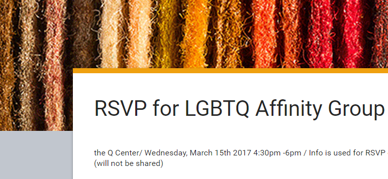

Tutorial Student Sign in click here !!
Students. Share this with your teachers and anyone who works at PPS and is LGBTQ or other non binary gender.

For all Portland Public Schools staff who identify as LGBTQ, please join us on Wednesday, March 15th from 4:30-6pm, at The Q Center (4114 N. Mississippi, Portland 97217). Come together and get to know others who identify as LGBTQ in our district. This will be a space to build community, share experiences and celebrate our unique contributions to PPS. Light refreshments will be served.
To RSVP, please click on link below:
https://docs.google.com/forms/d/e/1FAIpQLSdI74jX7zZQDz0qK8WUrheeTHhLZctH9TWSyGmZxMV38Ulz7g/viewform
RSVP for LGBTQ Affinity Group
The Q Center/ Wednesday, March 15th 2017 4:30pm -6pm / Info is used for RSVP only/ Anonymous (will not be shared)
For more information, please contact:
Matti Girardi -
mgirardi@pps.net
Serene Bertram -
sbertram@pps.net
Welcome from Mr. Rowe. Dear students and parents. If your student knows their subdomain you can change the url to view their website. Otherwise click the links at the top.
Farmers Markets - Good food at low cost. All summer https://www.google.com/maps/d/edit?mid=1kil0NHCqu6Mimt7J97b2jWv90uo
Resources for students and family. Help with anything you need Click here for the Mult Co Teen Resources
Coding 1 Assignment 1 and other samples http://007.digitalfhs.com
This website is now a github project: http://digitalfhs.github.io